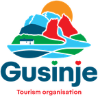

Prokletijski Peridot
A treasure hunt in the Accursed Mountains
Play the legend.
Explore Prokletije.
An earthquake shattered the green gem of Prokletije. Find its pieces out on the trails of Prokletije.
Your progress stays on this device.
This game is developed under project Xplore Prokletije, supported by:

